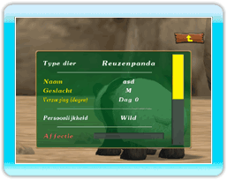

14 |
Statusscherm
dieren |
 |
|

Richt op een dier in het verblijf en druk
op
●Diersoort De diersoort die je grootbrengt. ●Naam dier De naam die je het dier hebt gegeven. ●Geslacht Geeft aan of het dier een mannetje of een vrouwtje is. ●Verzorging (dagen) Geeft aan hoeveel dagen je het dier al grootbrengt. ●Persoonlijkheid De huidige persoonlijkheid van het dier. ●Affectie Neemt dagelijks toe als de maag- en energieparameters van het dier consistent hoog zijn. Maar als het dierenverblijf smerig is, gaat de affectie op die dag niet omhoog, zelfs niet als Maag en Energie wel hoog zijn. ●Energie Gaat omhoog als het dier wordt geaaid of geroepen. Maar als het dierenverblijf smerig is, gaat de energie sneller omlaag. ●Maag Neemt langzamerhand af om aan te geven dat het dier honger krijgt. Voer het dier voordat de maag helemaal leeg is. ●Keren gevoerd Geeft aan hoe vaak je het dier hebt gevoerd. ●Keren geaaid Geeft aan hoe vaak je het dier hebt geaaid. ●Keren geroepen Geeft aan hoe vaak je het dier hebt geroepen. ●Drachtig Wordt alleen weergegeven als een vrouwtjesdier drachtig is. ●Vader Geeft de naam van de vader van het dier weer. (Dit wordt niet weergegeven bij dieren uit het dierencentrum.) ●Moeder Geeft de naam van de moeder van het dier weer. (Dit wordt niet weergegeven bij dieren uit het dierencentrum.) |
 |
 |
 |